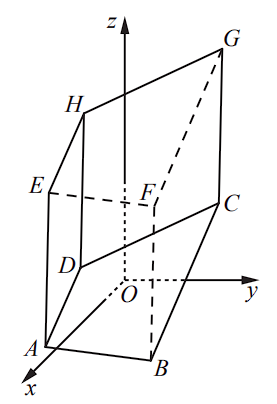
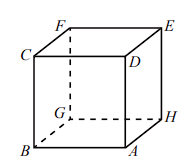
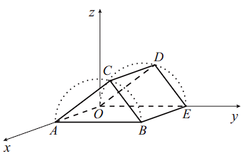
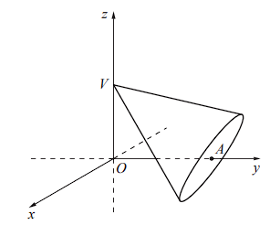
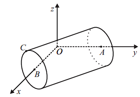
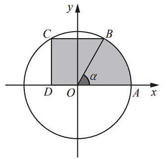
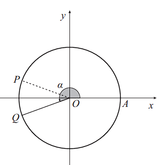
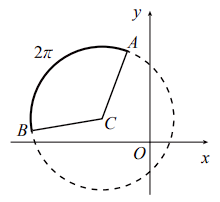

Estrutura destes blocos de exercícios. Os 9 exercícios que se seguem foram selecionados das 1.ª e 2.ª fases dos exames de 2020, 2022, 2023 e 2024 — todos do referencial AE 2018. Os exames de 2025 ficam reservados para as simulações de exame integrais nas semanas finais de preparação. A seleção privilegia a diversidade de sólidos, a articulação com geometria do plano e a presença de demonstrações.
Aula 1 — Geometria 3D em referencial Oxyz. Sólidos diversos (prisma trapezoidal, cubo, prisma triangular reto, cone, cilindro), planos, retas, distâncias, ângulos, projeção ortogonal e probabilidade geométrica.
Aula 2 — Geometria do plano + Demonstrações. Circunferência, sectores, produto escalar 2D, ângulos orientados e três demonstrações de natureza geométrica.
Aviso importante (2026). Em 2026, segundo os critérios oficiais do EduQA, a aplicação direta da fórmula da distância de um ponto a um plano (ou entre dois planos paralelos) não é aceite sem dedução. Os exercícios devem ser resolvidos por projeção ortogonal — método que devem treinar prioritariamente.
Índice de exercícios
Aula 1 — Geometria 3D: Exercícios A, B, E, G, I (5 sólidos diferentes)
Aula 2 — Geometria do plano: Exercícios C, D, F, H (4 itens, com demonstrações)
Documento de preparação para o exame · 23 de junho de 2026
Compilado a partir dos enunciados oficiais do IAVE / EduQA (1.ª e 2.ª fase, 2020–2024)
Aula 1 · Geometria 3D em referencial OxyzConteúdos a rever
Aula 1 — Geometria 3D
Conteúdos a rever antes dos exercícios
1. Vetores no espaço
Coordenadas de vetor a partir de dois pontos: AB = B − A
Norma de vetor: |u| = √(u₁² + u₂² + u₃²)
Produto escalar: u · v = u₁v₁ + u₂v₂ + u₃v₃
Ângulo entre vetores: cos θ = (u · v) / (|u| · |v|)
Vetores perpendiculares: u · v = 0
Vetores colineares (paralelos): existe k ∈ ℝ tal que u = k v
2. Plano
Equação cartesiana: ax + by + cz = d com vetor normal n = (a, b, c)
Equação dado um ponto e o vetor normal: substituir o ponto e isolar d
Plano paralelo a outro: mesmo vetor normal (à parte do termo independente)
Plano perpendicular a uma reta: vetor normal = vetor diretor da reta
Plano mediador de [AB]: passa no ponto médio M de [AB] e tem AB como vetor normal
Dois planos perpendiculares: produto escalar dos vetores normais = 0
3. Reta
Equação vetorial: (x, y, z) = (x₀, y₀, z₀) + k(a, b, c), k ∈ ℝ
Reta paralela a outra: vetor diretor colinear ao da reta dada
Reta perpendicular a um plano: vetor diretor = vetor normal do plano
Duas retas perpendiculares: produto escalar dos vetores diretores = 0
Verificar se um ponto pertence à reta: substituir e resolver em ordem a k
4. Distâncias — método da projeção ortogonal (obrigatório em 2026)
Distância de ponto P a plano α: (1) escrever a reta perpendicular a α que passa em P; (2) intersetar com α obtendo o pé da perpendicular P'; (3) calcular |PP'|
O ponto P' assim obtido é também o ponto do plano mais próximo de P
Aviso: a fórmula direta d = |ax₀+by₀+cz₀−d| / √(a²+b²+c²) não é aceite sem dedução prévia
Lembrete sobre a calculadora. Em 2026, a calculadora gráfica deve ser colocada em modo de exame antes do início da prova, na presença do professor responsável. Os exercícios identificados como "sem recorrer à calculadora" exigem resolução exclusivamente analítica.
Geometria · Aulas 1 e 2 · Preparação Mat A 12.º · 2026 · Página 2
Aula 1 · Geometria 3D · Exercício AExame 2024 · 1.ª fase · item 3
Exercício A — Prisma reto trapezoidal 38 pts
Exame Final Nacional · Mat A 635 · 2024 · 1.ª fase · item 3 (3.1, 3.2 e 3.3)
Na Figura 1, está representado, em referencial o.n. Oxyz, o prisma reto [ABCDEFGH], de bases [ABCD] e [EFGH].
Sabe-se que:
as bases do prisma são trapézios retângulos
o ponto A tem coordenadas (4, −4, −3), e o ponto B tem ordenada igual ao dobro da abcissa
uma equação da reta BC é (x, y, z) = (3, 5, 1) + k(2, 3, 6), k ∈ ℝ

Figura 1 — Prisma reto trapezoidal [ABCDEFGH]
3.1.12 pts Qual das equações seguintes é uma equação do plano ABF?
3.2.14 pts Determine, sem recorrer à calculadora, a não ser para efetuar eventuais cálculos numéricos, a amplitude do ângulo convexo AOB. Apresente o resultado em graus, arredondado às unidades.
Resolução:
Geometria · Aulas 1 e 2 · Preparação Mat A 12.º · 2026 · Página 3
Aula 1 · Geometria 3D · Exercício AExame 2024 · 1.ª fase · item 3
3.3.14 pts Selecionam-se, ao acaso, dois vértices de cada uma das bases do prisma. Determine a probabilidade de os quatro vértices selecionados não pertencerem a uma mesma face lateral do prisma. Apresente o resultado na forma de fração irredutível.
Resolução:
Pista didática: O exercício 3.3 articula combinatória com geometria. O nº de casos possíveis é C(4,2) × C(4,2). Nº de casos contrários (vértices na mesma face lateral): há 4 faces laterais, cada face lateral é um quadrilátero com 2 vértices em cada base.
Geometria · Aulas 1 e 2 · Preparação Mat A 12.º · 2026 · Página 4
Aula 1 · Geometria 3D · Exercício BExame 2022 · 2.ª fase · item 5
Exercício B — Cubo · produto escalar e ponto numa reta 26 pts
Exame Final Nacional · Mat A 635 · 2022 · 2.ª fase · item 5 (5.1 e 5.2)
Na Figura 2, está representado o cubo [ABCDEFGH].
Fixado um determinado referencial o.n. Oxyz, tem-se: A(−2, 5, 0), B(1, 1, −2) e C(3, 2, 8).

Figura 2 — Cubo [ABCDEFGH]
5.1.12 pts Qual é o valor de AB · HE?
(A) −49 (B) 0 (C) 7 (D) 49
Resolução / opção:
5.2.14 pts Resolva este item sem recorrer à calculadora. Sabe-se que o vértice E do cubo pertence à reta definida pela equação (x, y, z) = (0, 0, 3) + k(1, 1, −1), k ∈ ℝ. Determine as coordenadas do vértice E.
Resolução:
Geometria · Aulas 1 e 2 · Preparação Mat A 12.º · 2026 · Página 5
Aula 1 · Geometria 3D · Exercício EExame 2023 · 1.ª fase · item 6
Exercício E — Prisma triangular reto inscrito em semicircunferência 26 pts
Exame Final Nacional · Mat A 635 · 2023 · 1.ª fase · item 6 (6.1 e 6.2)
Na Figura 3, está representado, em referencial o.n. Oxyz, o prisma triangular reto [OABCDE], de bases [ABC] e [OED].
Sabe-se que:
as bases do prisma estão inscritas em semicircunferências, respetivamente, de diâmetros [AB] e [OE]
os vértices A e E do prisma pertencem, respetivamente, aos semieixos positivos Ox e Oy
OE = 12,5
a reta AC é definida pela equação vetorial (x, y, z) = (10, 0, 0) + k(0, 4, 3), k ∈ ℝ

Figura 3 — Prisma triangular reto [OABCDE] com bases inscritas em semicircunferências
6.1.12 pts Qual das seguintes equações vetoriais define a reta OD?
(A) (x, y, z) = (0, 6, 8) + k(0, 2, 3/2), k ∈ ℝ
(B) (x, y, z) = (0, −4, −3) + k(0, 2, 3/2), k ∈ ℝ
(C) (x, y, z) = (0, −4, −3) + k(0, 3, −4), k ∈ ℝ
(D) (x, y, z) = (0, 6, 8) + k(0, 3, −4), k ∈ ℝ
Resolução / opção:
6.2.14 pts Resolva este item sem recorrer à calculadora. Determine as coordenadas do ponto C.
Resolução:
Geometria · Aulas 1 e 2 · Preparação Mat A 12.º · 2026 · Página 6
Aula 1 · Geometria 3D · Exercício GExame 2022 · 1.ª fase · item 6
Exercício G — Cone reto 26 pts
Exame Final Nacional · Mat A 635 · 2022 · 1.ª fase · item 6 (6.1 e 6.2)
Na Figura 4, está representado, em referencial o.n. Oxyz, um cone reto de vértice V e base de centro no ponto A.
Sabe-se que:
o ponto V pertence ao eixo Oz, e o ponto A pertence ao eixo Oy
a base do cone tem raio 3 e está contida no plano definido por 4y + 3z = 16

Figura 4 — Cone reto de vértice V (eixo Oz) e base de centro A (eixo Oy)
6.1.12 pts Qual das seguintes equações define um plano perpendicular ao plano que contém a base do cone e que passa no ponto de coordenadas (1, 2, −1)?
6.2.14 pts Resolva este item sem recorrer à calculadora. Determine o volume do cone.
Resolução:
Geometria · Aulas 1 e 2 · Preparação Mat A 12.º · 2026 · Página 7
Aula 1 · Geometria 3D · Exercício I (especial)Exame 2020 · 1.ª fase · item 5
Exercício I — Cilindro reto · projeção ortogonal essencial 2026
Exame Final Nacional · Mat A 635 · 2020 · 1.ª fase · item 5 (5.1 e 5.2)
Importância especial deste exercício para 2026. O subitem 5.2 trabalha o método da projeção ortogonal, que é o método obrigatório em 2026 para calcular distâncias de pontos a planos. Mesmo que não trabalhem mais nenhum exercício, garanta que dominam este.
Na Figura 5, está representado, num referencial o.n. Oxyz, um cilindro reto.
Sabe-se que:
o ponto A pertence ao eixo Oy e é o centro de uma das bases do cilindro, e o ponto B pertence ao eixo Ox e é o centro da outra base
o ponto C pertence à circunferência de centro B que delimita uma das bases do cilindro
o plano ABC é definido pela equação 3x + 4y + 4z − 12 = 0

Figura 5 — Cilindro reto com bases nos eixos Oy (centro A) e Ox (centro B)
5.1.14 pts Resolva este item sem recorrer à calculadora. Determine BC, sabendo que o volume do cilindro é igual a 10π.
Resolução:
5.2.14 pts Resolva este item sem recorrer à calculadora. Seja P o ponto de coordenadas (3, 5, 6). Determine as coordenadas do ponto do plano ABC que se encontra mais próximo do ponto P.
Resolução (método da projeção ortogonal):
Geometria · Aulas 1 e 2 · Preparação Mat A 12.º · 2026 · Página 8
Aula 2 · Geometria do plano + DemonstraçõesConteúdos a rever
Aula 2 — Geometria do plano + Demonstrações
Conteúdos a rever antes dos exercícios
6. Circunferência no plano
Equação reduzida: (x − a)² + (y − b)² = r² — centro (a, b), raio r
Comprimento de arco (formulário): ℓ = α · r com α em radianos
Área de sector circular (formulário): A = (α · r²) / 2
7. Produto escalar no plano
Em coordenadas: u · v = u₁v₁ + u₂v₂
Interpretação geométrica: u · v = |u| · |v| · cos θ
Vetores perpendiculares: u · v = 0
Cuidado: o "ângulo θ" é o ângulo entre os vetores, não necessariamente o ângulo geométrico marcado na figura
8. Coordenadas em circunferência trigonométrica
Ponto na circunferência de centro O e raio r, fazendo ângulo α com o semieixo Ox: P = (r cos α, r sin α)
Para circunferência de centro (a, b) e raio r: P = (a + r cos α, b + r sin α)
Resolver no intervalo dado, verificar se as soluções pertencem ao intervalo
10. Demonstrações de natureza geométrica
Decompor a região em formas conhecidas (sectores, triângulos, trapézios, retângulos)
Calcular cada parte usando as fórmulas do formulário
Somar/subtrair conforme a região
Manipular algebricamente até chegar à expressão pedida (cuidado com identidades trigonométricas: sen 2α = 2 sen α cos α, etc.)
Para mostrar perpendicularidade entre vetores: provar que produto escalar = 0
Usar coordenadas (r cos α, r sin α) sempre que existam pontos numa circunferência
Estratégia para demonstrações. Os exames recentes (2021–2025) têm pedido sistematicamente demonstrações geométricas. O segredo é não tentar manipular a expressão final logo no início — primeiro calcula-se "em bruto", só depois se simplifica usando identidades. Em demonstrações de perpendicularidade, escreve-se os vetores em coordenadas e calcula-se o produto escalar.
Geometria · Aulas 1 e 2 · Preparação Mat A 12.º · 2026 · Página 9
Aula 2 · Plano · Exercício CExame 2024 · 1.ª fase · item 9
Exercício C — Demonstração de área (sector + trapézio) 14 pts
Exame Final Nacional · Mat A 635 · 2024 · 1.ª fase · item 9
Na Figura 6, estão representadas, em referencial o.n. Oxy, a circunferência de centro em O e raio 2 e uma região sombreada composta pelo trapézio [OBCD], retângulo em C e em D, e pelo sector circular correspondente ao ângulo orientado AOB, de amplitude α, em radianos, com α ∈ ]0, π/2[, e raio OA.
Sabe-se que:
o ponto A pertence à circunferência e ao semieixo positivo Ox
os pontos B e C pertencem à circunferência, sendo C o simétrico de B em relação ao eixo Oy

Figura 6 — Sector OAB + trapézio [OBCD] (região sombreada)
9.14 pts Mostre que a área da região sombreada é dada, em função de α, pela expressão:
2α + 3sen(2α)
Demonstração:
Pista didática: coordenadas dos pontos: A = (2, 0), B = (2 cos α, 2 sen α), C = (−2 cos α, 2 sen α), D = (0, 2 sen α). A região tem duas partes: o sector OAB de área (1/2)·α·2² = 2α; e o trapézio [OBCD] cujas bases são |OD| = 2 sen α e |BC| = 4 cos α, e altura 2 sen α. A identidade-chave é sen(2α) = 2 sen α cos α.
Geometria · Aulas 1 e 2 · Preparação Mat A 12.º · 2026 · Página 10
Aula 2 · Plano · Exercício DExame 2022 · 2.ª fase · item 15
Exercício D — Demonstração: ângulo reto na parábola 14 pts
Exame Final Nacional · Mat A 635 · 2022 · 2.ª fase · item 15
Considere, num referencial o.n. Oxy, o gráfico da função f, de domínio ℝ, definida por f(x) = x², e uma reta r, não vertical, que passa no ponto de coordenadas (0, 1).
Sejam A e B os pontos de intersecção da reta r com o gráfico da função f.
Mostre que o ângulo convexo AOB é um ângulo reto.
Demonstração:
Pista didática: Sejam A = (a, a²) e B = (b, b²) os pontos de intersecção. Como a reta passa por A, B e por (0, 1), e os três pontos são colineares, prova-se que ab = −1. Para mostrar que o ângulo AOB é reto, calcula-se OA · OB = a·b + a²·b² = ab(1 + ab). Substituindo ab = −1 obtém-se OA · OB = (−1)(1 + (−1)) = 0. Logo OA ⊥ OB.
Geometria · Aulas 1 e 2 · Preparação Mat A 12.º · 2026 · Página 11
Aula 2 · Plano · Exercício FExame 2023 · 1.ª fase · item 7
Exercício F — Coordenadas em circunferência → cos(2α) 14 pts
Exame Final Nacional · Mat A 635 · 2023 · 1.ª fase · item 7
Na Figura 8, estão representados, em referencial o.n. Oxy, uma circunferência de centro na origem e os pontos A, P e Q, que pertencem à circunferência.
Sabe-se que:
o ponto A tem coordenadas (2, 0)
o ângulo orientado AOQ tem amplitude α ∈ ]π/2, π]
os pontos P e Q têm a mesma abcissa
OP · OQ = 3
Determine o valor de cos(2α).

Figura 8 — Circunferência de centro O, pontos A, P, Q (P e Q com mesma abcissa)
Resolução:
Pista didática: Q = (2 cos α, 2 sen α). Como P tem a mesma abcissa que Q e está na circunferência, P = (2 cos α, −2 sen α). O produto escalar é OP · OQ = (2 cos α)·(2 cos α) + (2 sen α)·(−2 sen α) = 4 cos²α − 4 sen²α = 4 cos(2α). Da equação 4 cos(2α) = 3 obtém-se cos(2α) = 3/4.
Geometria · Aulas 1 e 2 · Preparação Mat A 12.º · 2026 · Página 12
Aula 2 · Plano · Exercício HExame 2022 · 1.ª fase · item 7
Exercício H — Comprimento de arco → produto escalar 14 pts
Exame Final Nacional · Mat A 635 · 2022 · 1.ª fase · item 7
Na Figura 9, está representada, em referencial o.n. Oxy, a circunferência de equação (x − 2)² + (y − 1)² = 9.
O ponto C é o centro da circunferência. A e B são dois pontos da circunferência. O arco de circunferência AB tem comprimento 2π.
Determine o valor do produto escalar CA · CB.

Figura 9 — Circunferência (x−2)² + (y−1)² = 9, arco AB de comprimento 2π
Resolução:
Pista didática: Da equação da circunferência, raio = 3. Do comprimento de arco ℓ = α · r, com ℓ = 2π e r = 3, obtém-se α = 2π/3 (ângulo central ACB). Pelo produto escalar: CA · CB = |CA| · |CB| · cos α = 3 · 3 · cos(2π/3) = 9 · (−1/2) = −9/2.
Geometria · Aulas 1 e 2 · Preparação Mat A 12.º · 2026 · Página 13
Síntese finalAulas 1 e 2 · Geometria
Síntese das Aulas 1 e 2 — Geometria
Tabela síntese dos exercícios
Ex.
Origem
Tema
Cot.
Foco didático
A
2024 F1 · 3
Prisma trapezoidal
38 pts
Plano + ângulo + probabilidade
B
2022 F2 · 5
Cubo
26 pts
Produto escalar 3D + ponto na reta
E
2023 F1 · 6
Prisma triangular reto
26 pts
Retas paralelas + coordenadas
G
2022 F1 · 6
Cone reto
26 pts
Planos perpendiculares + volume
I
2020 F1 · 5
Cilindro reto
28 pts
Projeção ortogonal (essencial 2026!)
C
2024 F1 · 9
Sector + trapézio
14 pts
Demonstração de área
D
2022 F2 · 15
Parábola + reta
14 pts
Demonstração de ângulo reto
F
2023 F1 · 7
Circunferência + 2 pontos
14 pts
Coordenadas trig. + cos(2α)
H
2022 F1 · 7
Circunferência + arco
14 pts
Arco → produto escalar
Erros mais comuns nestes exercícios
Geometria 3D: confundir vetor diretor de uma reta com vetor normal de um plano; aplicar diretamente a fórmula da distância ponto-plano sem deduzir (penalização severa em 2026); esquecer de verificar se um ponto pertence efetivamente à reta antes de usar coordenadas.
Produto escalar: aplicar |u|·|v|·cos α com α sendo o ângulo da figura, quando o ângulo no produto escalar tem de ser o ângulo entre os vetores (que pode ser diferente do ângulo geométrico).
Demonstrações: tentar manipular a expressão final em vez de calcular primeiro a área "em bruto" e só depois simplificar; esquecer identidades trigonométricas (sen 2α = 2 sen α cos α; cos²α − sen²α = cos 2α).
Coordenadas em circunferência: não usar (r cos α, r sin α) quando aparecem pontos na circunferência — a maioria dos exercícios resolve-se trivialmente quando este é o ponto de partida.
Sugestão de gestão de tempo (90 min × 2 aulas)
Aula 1 (90 min): 25 min de revisão de conteúdos 3D + 30 min Exercício A (resolução guiada) + 30 min Exercício B (autónomo) + 5 min síntese.
Aula 2 (90 min): 20 min revisão de conteúdos do plano + 25 min Exercício C (demonstração de área guiada) + 25 min Exercício D (demonstração de ângulo reto autónoma) + 15 min discussão de critérios e erros + 5 min síntese.
Para casa: exercícios E, F, G, H. Para alunos mais avançados ou aulas suplementares: I (essencial dominar antes do exame).
Recurso oficial. Os enunciados originais e os critérios de classificação destes exames estão disponíveis em iave.pt (secção "Provas e exames"). Recomenda-se a consulta dos critérios oficiais após cada resolução para verificar a forma como o IAVE/EduQA classifica cada etapa.
Reservado para simulações finais. Os exames de 2025 (1.ª fase, 2.ª fase, época especial) e o exame de 2024 (2.ª fase, época especial) não foram usados aqui. Estão guardados para as simulações de exame integrais nas semanas finais de preparação.
Documento elaborado para a preparação do Exame Nacional de Matemática A — 12.º ano — 1.ª fase, 23 de junho de 2026.
Referencial AE 2018. Compilado dos exames originais do IAVE / EduQA (2020–2024).
Geometria · Aulas 1 e 2 · Preparação Mat A 12.º · 2026 · Página 14